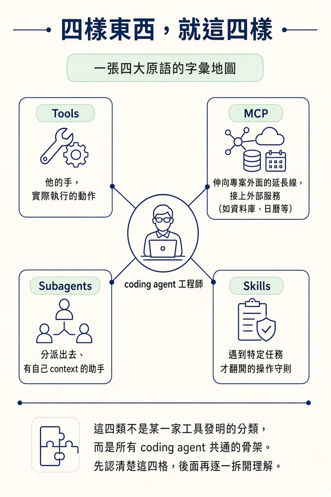
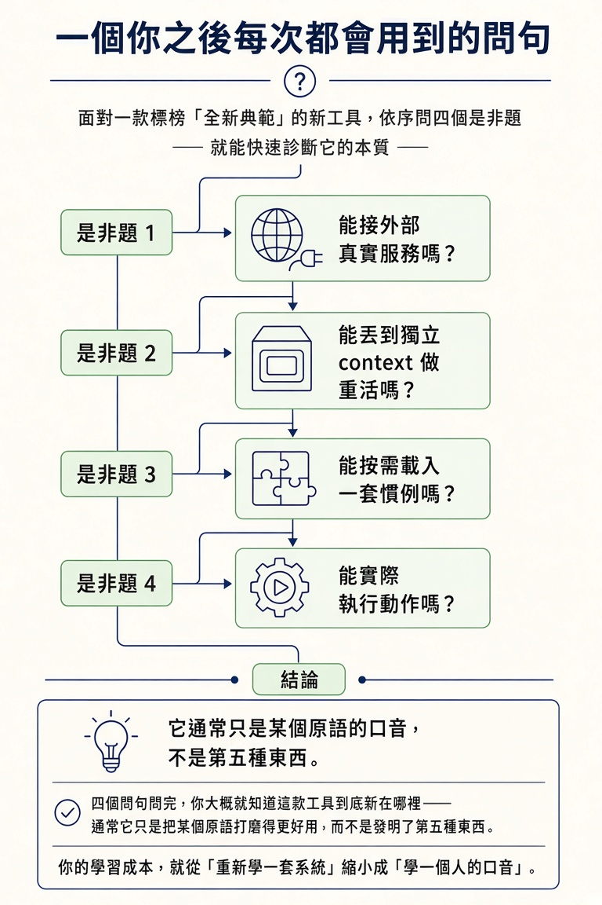

說得出四大原語（tools／MCP／subagents／skills），並解釋為什麼這四個只要學會一次，之後每一款新工具你都只是在學它的口音。
前兩節講的是 agent 怎麼想事情。它跑的是 Read→Decide→Act→Observe 的迴圈；它沒有索引，只能靠搜尋在現場找路；它讀進來的東西最後會把 context window 塞滿。但還有一個更根本、卻很少被講清楚的問題：它到底能伸手去拿什麼？
你大概有過這種感覺。每隔幾個月，社群上就冒出一款新的 coding agent 工具，標題寫著「全新典範」。你點開一看，名詞全換了：上一款叫 actions，這一款叫 functions，下一款可能叫 capabilities。你花一個週末把它搞懂，下個月又來一款，於是你又從零開始。久了會有種疲乏：這條路是不是永遠學不完？
這一節要先把這份疲乏拆掉。因為不管工具怎麼命名、畫面怎麼改，你能叫 agent 去拿的東西只有四類。把這四類記牢，之後每次遇到新工具，你只是在學它的口音，不是在學一門新語言。
把 coding agent 想成你請來的一位工程師。他會思考、會動手，但能用的傢俬就那幾樣：
| 原語 | 一句話 | 它解決的問題 |
|---|---|---|
| Tools（工具） | agent 被允許執行的具體動作 | 讓它從「只會說」變成「能動手做」 |
| MCP | 把專案外面的服務接成 agent 可呼叫的工具 | 讓它碰得到資料庫、日曆這類「不在你 repo 裡」的東西 |
| Subagents（子代理） | 丟進自己的 context 裡做重活、只回傳結果的幫手 | 讓主對話的 context 保持乾淨 |
| Skills（技能） | 按需求載入的操作說明書 | 讓它照一套寫好的慣例做事，而不是靠猜 |
這四類不是某一家工具發明的分類，而是所有 coding agent 共通的骨架。Tools 是它的手，是它實際執行的每一個動作；MCP 是它伸向專案外面的延長線；subagents 是它可以分派出去的助手；skills 是它遇到特定任務時才翻開的守則。這一節先把這四格認清楚，後面幾節再逐一拆開：這一節看 tools，下一節看 MCP，另外兩個原語留到後面的節點。

關鍵在於：這四樣東西回答的是同一個問題的四個面向。那個問題是「agent 能拿什麼、把它拿來幹嘛」。工具換了名字，這個問題沒有變。所以每一款新工具都可以看成同一句話的不同口音：意思一樣，只是發音不同。
實際情況差不多就是這樣。舉最常見的例子：同一個「叫 agent 讀一個檔案」的動作，在某一款工具裡叫 Read，另一款裡可能換個寫法、換個參數，但本質一模一樣——打開檔案、把內容餵回對話。當你知道它底層屬於哪一類原語，就不必重新理解一次，只要記住它在這款工具裡叫什麼。
學會原語本身，工具就只是它的口音。等你把這四格記牢，之後每次有新工具上線，你要問的不是「這是什麼新東西」，而是「這是它對哪一個原語的口音」。
這也是這個模組排在這裡的原因。上一節的 context window 告訴你 agent 的「記憶」有多貴；這一節的四大原語告訴你它「能拿的東西」就這麼多。兩件事合起來，你手上就有了一張完整的帳：每做一個決定，都知道它會動用什麼、會花多少。
認識這四格之後，你多了一個可以直接用的思考工具。新聞上又出現一款「革命性」的 agent 工具時，先別急著重學一遍，問自己四個問題：它能把外部的真實服務接進來嗎？那是在講 MCP。它能把重活丟到獨立的 context 去做嗎？那是在講 subagents。它能不能按需載入一套慣例？那是在講 skills。它能不能實際執行動作？那是在講 tools。
四個問句問完，你大概就知道這款工具到底新在哪裡——通常它只是把某個原語打磨得更好用，而不是發明了第五種東西。你的學習成本，就從「重新學一套系統」縮小成「學一個人的口音」。

Coding agent 能伸手去拿的東西只有四類：tools（它被允許執行的動作）、MCP（把外部服務接成可呼叫的工具）、subagents（在獨立 context 裡做重活的幫手）、skills（按需載入的操作說明書）。這四類是跨工具共通的骨架，所以只要學一次；之後每一個新工具，你只是在學它的口音。面對新工具時，同一個問題永遠是同一個問題：它，是對哪一個原語的口音？
四格裡最貼身、你每天都會看到的那一格，是 tools。下一節把這一格放大：一個 tool 到底是什麼、每個 coding agent 都有的五個核心工具是哪五個，還有一件很容易被誤會的事——真正「動手」的，其實不是模型本身。